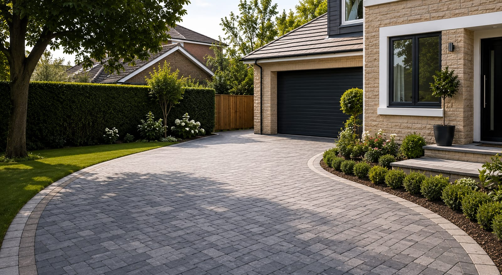

Frequently asked questions
Everything you might want to know about your new driveway — from costs and materials to drainage, timescales and our guarantee.
General
Yes — every quote is completely free and carries no obligation. We'll visit, measure up, talk through your ideas and budget, and follow up with a clear written price (usually the same day). No pushy sales calls, we promise.
We're based in Derby and cover the whole county — including Chesterfield, Belper, Ilkeston, Ripley, Heanor, Long Eaton, Swadlincote, Alfreton, Matlock, Dronfield, Ashbourne and all the surrounding towns and villages. If you're nearby but don't see your area, just ask — chances are we cover it.
Absolutely. We carry £5m public liability insurance and back every single installation with a written 10-year workmanship guarantee, so you can have complete peace of mind from quote to completion.
Pricing & quotes
Every driveway is different, so the price depends on the size, the surface you choose, your ground conditions and any drainage or excavation required.
As a rough guide, gravel and tarmac tend to be the most budget-friendly options, while block paving and resin-bound sit at the premium end. The only way to get an accurate figure is a free, no-obligation site visit — get in touch and we'll measure up.
None at all. Site visits, advice and quotes are completely free and there's never any obligation to go ahead.
In most cases, no. If you use a permeable surface (such as resin-bound or gravel), or drain rainwater to a soakaway or border rather than out onto the road, planning permission generally isn't needed.
We design SuDS-compliant driveways as standard and will always advise you on your specific situation before any work begins.
Installation
Most domestic driveways take between 3 and 7 working days, depending on the size, surface and how much preparation and drainage is involved. We'll give you a clear timescale in your written quote and keep you updated throughout.
Yes. Full excavation, removal and responsible disposal of your existing surface is included, along with proper sub-base preparation. Cutting corners on the foundations is the number-one cause of driveway failure — so we never do.
We work with a carefully chosen network of approved, fully-vetted and insured local installers, and we manage every project ourselves from first quote to final walkthrough. You'll always have a single point of contact looking after your job, so quality and accountability never slip.
Materials, aftercare & guarantee
It comes down to your budget, your home and how you use the space:
Block paving — hard-wearing, huge choice of styles, and individual blocks are easily lifted and re-laid. Resin-bound — smooth, permeable and very low-maintenance. Tarmac — cost-effective, quick to lay and great for larger areas. Gravel — affordable, characterful and excellent for drainage.
We'll happily talk you through the pros and cons and recommend the right fit.
Modern driveways are very low-maintenance — an occasional sweep and gentle wash is usually all that's needed. We'll talk you through simple aftercare for your chosen surface, and we also offer professional cleaning, re-sanding and sealing to refresh and protect it over the years.
Just give us a call. Every driveway is covered by our written 10-year workmanship guarantee, and we pride ourselves on standing behind our work. In the rare event of an issue, we'll come back and put it right.
Still have a question?
We're always happy to help — give us a call or request your free quote and we'll talk it through.